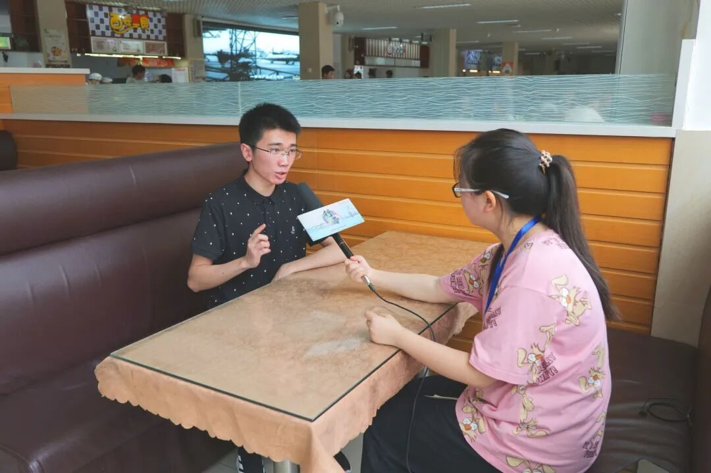
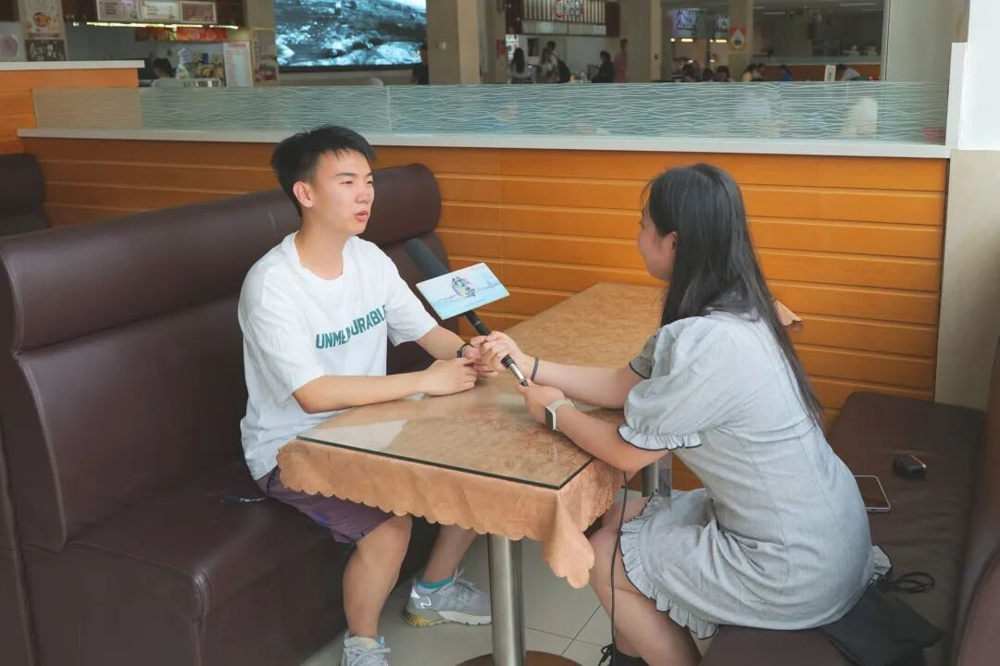

【行者无疆 寓绻淮扬】校园采访总结

● INTERVIEW
【行者无疆·寓绻淮扬】
校园采访——
七月流火，阳光弥漫，蝉鸣阵阵。
行者们带着满腔的热爱，奔赴一场场瑰丽的相遇。
采访视频在这里哦！
▶
字里行间展憧憬
“水韵江南，垂柳袅袅”这短短八个字，便道尽了扬州的温婉、灵动。名淮左都，在同学们的心里留下过怎样的痕迹?
一份关于扬州人文精神和历史文化底蕴的调查问卷散布在校园的每一个角落，激发了同学们对扬州的浮想联翩和曾经流连忘返的回忆。可谓听流水缓缓，赏野花绚烂，答扬州印象，忆名都韵味。
LIFE IS LIKE
A JOURNEY ▲
高谈阔论蕴真情
“十年一觉扬州梦”，在大家就餐休息空隙之余，行者们与受访幸运儿们来了一次有关于扬州梦的邂逅。
交谈中问到受访者了解的相关诗句的环节，同学们大显身手，一展才华，谈吐间描绘出他们心中的扬州梦。
扬州，繁华中不失清净，在受访者眼里，它是“人生只合扬州死，禅智山光好墓田”的温柔乡，是“谁知竹西路，歌吹是扬州”的锦绣地，更是“天下三分明月夜，二分无赖是扬州”的梦幻城。

黛瓦白墙，青砖木窗，柳树河畔，烟波浩渺，一叶小船。明月楼中满载着寄情于景的思念，五亭桥上观望水波潺潺，倒影蔚蓝天空的色彩。
扬州的诗与画，情和意，不仅是文墨书画上的精心构思，还应是亲身游历的沉浸体验。行者们即将奔赴江南的名淮左都，一睹扬州盛世颜，纪实扬州的山清水秀和种种风情。
来源 | 行者无疆实践团
文字 | 李驰瑞
摄影 | 陈颖 谷镓良
编辑 | 杨静
审核 | 付媛 吕丰元 温兆琪